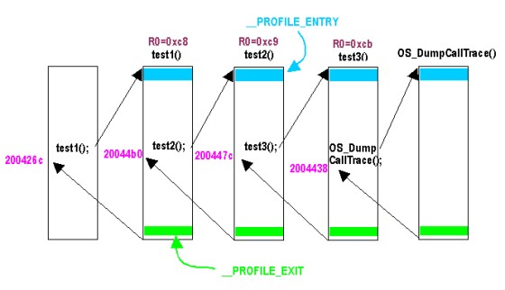

#include <nitro/os.h>void OS_DumpCallTrace( void );
None.
None.
This function displays function call trace information.
It displays the trace information that is present at the time it is called. If you are using a thread system, it will display information for the current thread. To display information for a particular thread, use OS_DumpThreadCallTrace().
The following is a description of trace information in the case of stack mode:
(Display Example)
The example indicates that currently,OS_DumpCallTrace: lr=0x02004438
test3: lr=0x0200447c, r0=0x000000cb
test2: lr=0x020044b0, r0=0x000000c9
test1: lr=0x0200426c, r0=0x000000c8OS_DumpCallTrace()is called, trace information is displayed, and the function returns the address 0x2004438. Prior to that test3() was called and the address 0x2004447c was returned. Prior to thattest2()was called and the address 0x20044b0 was returned. Prior to thattest1()was called and the address 0x200426c was returned. (The display of r0 is optional.)

The following is a description of trace information in the case of log mode.
(Display Example)
The example indicates that currently,OS_DumpCallTrace: lr=0x02004438
test3: lr=0x0200447c, r0=0x000000cb
test2: lr=0x020044b0, r0=0x000000c9
test1: lr=0x0200426c, r0=0x000000c8
test3: lr=0x0200447c, r0=0x000000cb
test2: lr=0x020044b0, r0=0x000000c9
test1: lr=0x0200426c, r0=0x000000c8OS_DumpCallTrace()is called, trace information is displayed, and the function returns the address 0x2004438. Additionally we can see that before this function was called, of the functions that were compiled with theprofilefeature on,test1,test2,test3,test1,test2,test3, were entered in this order. We cannot tell which function called what function.
Concerning R0 – R3 register display: Including this information in the function call trace buffer is optional. Including one register will cost 4 additional bytes in the buffer for each function call. Including the 4 registers R0 – R3 will cost 16 additional bytes for each function call. The R0 that is displayed is the value at the time that the function is called. In the case of C function arguments, it will be the first argument. R1 will be the second argument, R2 will be the third argument, and R3 will be the fourth argument. In the case of functions that do not take these arguments, they will be indeterminate values that have no special meaning. Concerning calling OS_DumpCallTrace(), OS_DumpThreadCallTrace() themselves, information other than R0 will not be displayed.
If this function is compiled for debugging, it will function properly. However, if compiled for the final ROM version (FINALROM) library, it will not do anything.
OS_InitCallTrace, OS_DumpThreadCallTrace
04/22/2004 Added a description of stack mode and log mode.
04/13/2004 Initial version.
CONFIDENTIAL